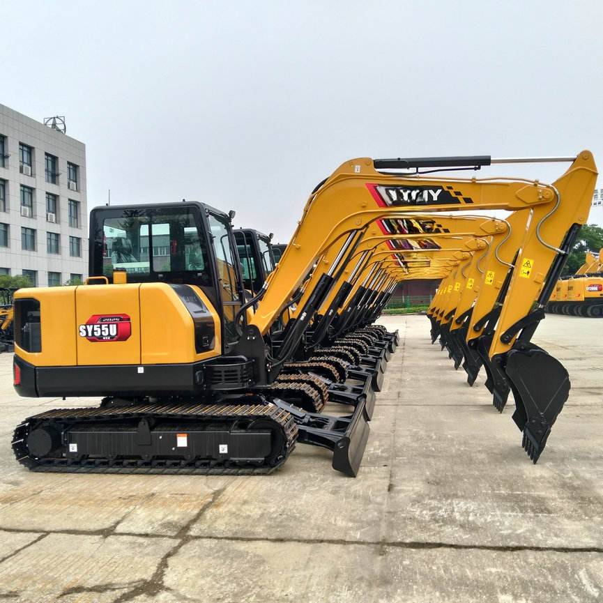

Refurbished SANY SY55u Excavator
The SANY SY55U is a highly versatile, 5.5-ton compact excavator that combines performance, fuel efficiency, and durability, making it ideal for a wide range of tasks in construction, landscaping, and utility work. As a refurbished model, it offers a significant cost advantage over a new machine while still maintaining excellent performance and reliability.
Honestly, it's almost impossible to buy a brand new excavator from China. They either don't exist or are made in China. If a Chinese seller tells you their Caterpillar/Komatsu/Volvo/Kobelco/Hitachi is brand new, they're lying. Therefore, a refurbished excavator is your best bet.

Here are the detailed specifications for a refurbished SANY SY55U excavator:
Operating Weight and Dimensions
- Operating Weight: 5,700–5,900 kg
- Overall Length: ~5.5–5.7 meters
- Overall Width: ~1.96–2.0 meters
- Overall Height: ~2.6–2.7 meters
- Ground Clearance: ~370 mm
- Tail Swing Radius: Zero tail swing (true compact radius)
- Track Width: 400 mm standard
Engine and Powertrain
- Engine Model: Yanmar 4TNV88 or Isuzu 4LE2 turbo diesel
- Rated Power Output: ~36–39 kW (48–52 hp)
- Maximum Torque: ~180–200 Nm @ 1,500 rpm
- Fuel Tank Capacity: ~120 liters
- Gradeability: Up to 35°
- Travel Speed: 2.8–4.8 km/h
- Swing Speed: ~10 rpm
Hydraulic System
- Main Pump Type: Variable displacement axial piston pump
- Flow Rate: ~2 × 100 L/min
- System Pressure: Up to 26 MPa
- Hydraulic Oil Capacity: ~140–160 liters
- Boom Cylinder Bore: ~90 mm
- Arm Cylinder Bore: ~80 mm
- Bucket Cylinder Bore: ~70 mm
Performance Metrics
- Bucket Capacity: 0.18–0.22 m³
- Max Digging Depth: ~3.8–4.1 meters
- Max Reach (Horizontal): ~6.5–6.8 meters
- Max Dump Height: ~4.3–4.5 meters
- Bucket Digging Force: ~42–45 kN
- Arm Digging Force: ~28–32 kN
Cab and Operator Features
- Cab Type: ROPS/FOPS certified
- Display: LCD monitor with diagnostics and fuel tracking
- Controls: Dual joystick pilot controls with adjustable sensitivity
- Comfort: Air-conditioned cab (optional), adjustable suspension seat
- Visibility: Panoramic glass with optional rear-view camera
Smart Features and Efficiency
- Eco Mode: Adaptive engine output for fuel savings
- Auto Idle: Reduces RPM during inactivity
- Centralized Lubrication: Optional for reduced maintenance
- Telematics Ready: Some refurbished units support remote diagnostics
Attachments Compatibility
- Standard Bucket: 0.18–0.22 m³
- Optional Tools: Hydraulic breaker, grapple, compactor, ripper
- Quick Coupler: Hydraulic or manual options available
Refurbishment Scope
Refurbished SY55U units typically include:
- Engine overhaul (injectors, turbo, seals)
- Hydraulic pump recalibration or replacement
- Electrical system rewiring and sensor testing
- Cab restoration (seat, controls, HVAC)
- Structural repairs (boom welding, bushing replacement, repainting)
Overview of the SANY SY55U Excavator
The SANY SY55U is a compact mini-excavator designed for urban construction and tight spaces. Despite its smaller size compared to larger excavators, the SY55U is packed with power and advanced features, enabling it to handle a variety of construction applications such as trenching, lifting, and material handling. It provides outstanding maneuverability in confined environments, making it particularly useful for residential projects, roadworks, and utility installations.
Refurbished SANY SY55U models offer the same reliability as their new counterparts but come at a much lower price, allowing businesses to save significantly without compromising on quality or performance.
Key Features of the SANY SY55U Excavator
The SANY SY55U excavator is built with advanced technology and a robust design to deliver high performance, precision, and durability. Below are the main features that make the SY55U stand out in its class:
Engine and Power
-
Engine: The SY55U is powered by a Yanmar 4TNV98 engine, a four-cylinder diesel engine renowned for its fuel efficiency, reliability, and low emissions. This engine produces a total output of approximately 36.5 kW (49 horsepower), providing the excavator with ample power for demanding tasks while maintaining fuel efficiency.
-
Fuel Efficiency: One of the standout features of the SY55U is its excellent fuel efficiency. The combination of the Yanmar engine and a highly optimized hydraulic system ensures that the excavator delivers powerful performance while keeping fuel consumption to a minimum, which reduces operating costs in the long run.
Hydraulic System
-
Advanced Hydraulics: The SY55U features a hydraulic system that ensures smooth and precise operation. The machine’s hydraulics have been fine-tuned to offer high lifting and digging forces while also reducing fuel consumption. The hydraulic components are designed for long-term durability, and the system is easy to maintain, ensuring that the excavator remains reliable throughout its lifecycle.
-
Digging Force: The SY55U’s hydraulic system provides impressive digging forces, allowing it to handle challenging digging tasks, even in tough soil conditions.
Compact Design and Maneuverability
-
Size and Dimensions: The SY55U is a 5.5-ton class compact excavator, ideal for jobs in tight spaces. With a narrow width of just under 2.2 meters (7.2 feet) and a short tail swing, the machine can operate in confined urban environments where larger equipment might be impractical.
-
Tail Swing Radius: The reduced tail swing design offers enhanced maneuverability, allowing operators to work in congested areas with greater precision and less risk of damage to surrounding structures or equipment.
-
Undercarriage: The SY55U comes with a durable undercarriage designed for stability on rough terrain. The tracks are well-suited for working on sloped surfaces, ensuring that the machine remains balanced and stable during operations.
Operator Comfort and Control
-
Operator Cabin: The operator cabin of the SY55U is designed for comfort and ease of use, with a spacious, ergonomic layout. The cabin is equipped with a high-quality seat, intuitive control systems, and an LCD display that provides critical information such as fuel levels, operating hours, and hydraulic pressure. The cabin also features excellent visibility, reducing the chances of accidents and improving overall safety.
-
Air Conditioning: Depending on the model, the SY55U may come equipped with air conditioning, providing a comfortable working environment even in hot weather conditions.
-
Joystick Controls: The excavator is equipped with smooth and precise joystick controls that make it easy for the operator to control the boom, arm, and bucket. The controls are responsive, providing the operator with excellent control over the machine’s movements, which is particularly helpful for delicate tasks like trenching or grading.
Performance and Capacity
-
Digging Depth: The SY55U boasts a maximum digging depth of 3.9 meters (12.8 feet), which makes it suitable for a range of digging tasks, from foundation work to utility installations.
-
Lifting Capacity: The lifting capacity of the SY55U is impressive for a compact machine, capable of lifting 1.6 tons at full reach. This makes the excavator ideal for handling heavy loads, such as large rocks or construction materials, with ease.
-
Bucket Capacity: The typical bucket capacity for the SY55U is around 0.2-0.3 cubic meters, depending on the attachment, providing a balance between load capacity and maneuverability. This allows the SY55U to effectively move soil, gravel, or other materials on a job site.
Advantages of Purchasing a Refurbished SANY SY55U Excavator
Opting for a refurbished SANY SY55U brings several advantages over purchasing a brand-new machine. Here are the key benefits:
Significant Cost Savings
Purchasing a refurbished SY55U excavator can save businesses 30-50% off the cost of a new machine. This is especially beneficial for smaller companies or those with limited budgets. By buying refurbished equipment, you can get the performance and reliability of a new machine without the steep upfront costs.
Certified Quality and Performance
Refurbished machines are thoroughly inspected, tested, and restored to like-new condition by professionals. A reputable refurbisher ensures that all components of the machine are in working order, replacing worn or damaged parts with high-quality replacements. As a result, a refurbished SY55U excavator performs just as well as a new model.
Faster Return on Investment
Because a refurbished SY55U is purchased at a lower price, it reaches a break-even point much quicker. The cost savings allow businesses to use the excavator on more jobs, making a faster return on investment. The refurbished model also tends to retain its value for a longer time, as it has already experienced its initial depreciation.
Environmentally Friendly
Opting for a refurbished SY55U is an environmentally friendly choice. It reduces the demand for new equipment production, which helps conserve resources and minimizes waste. Extending the lifespan of an existing excavator through refurbishment reduces the environmental footprint of the machinery.
Maintenance and Care for a Refurbished SANY SY55U
To keep your refurbished SY55U excavator in peak condition, regular maintenance is essential. Below are some important maintenance practices to follow:
-
Hydraulic System Checks: Regularly inspect the hydraulic system for leaks, proper fluid levels, and signs of wear. Keeping the hydraulic components in good condition ensures the machine performs at its best.
-
Engine and Oil Changes: Follow the manufacturer’s recommended intervals for oil and filter changes. Clean oil ensures the engine runs smoothly and prevents unnecessary wear.
-
Undercarriage and Tracks: Inspect the tracks for wear and tension. Ensure that the undercarriage is free from debris and that the components are properly lubricated.
-
General Inspections: Periodically check the machine for loose bolts, cracked parts, or other signs of wear and tear. Early detection of potential issues can prevent costly repairs down the line.
Conclusion
The SANY SY55U is an excellent choice for businesses looking for a compact excavator that offers a balance of power, precision, and efficiency in a small package. Its performance, fuel efficiency, and compact design make it an ideal machine for working in confined spaces, such as urban construction sites and residential areas. By choosing a refurbished SY55U, businesses can save money while still accessing high-quality equipment.
With its fuel-efficient engine, powerful hydraulics, and operator-friendly features, the refurbished SANY SY55U is a smart investment for any business in need of a versatile and cost-effective excavator. With the right maintenance, this machine can continue to deliver excellent performance for years to come, making it a valuable asset for contractors, landscapers, and utility workers alike.
Our Commitment
- 2 years / 4000 hours warranty.
- EPA certified.
- No sweatshop labor.
Contacts

- [email protected]
- Youtube Instagram Facebook
- Navigation: G206 (Sishu Bridge) in Changfeng County, Hefei City, Anhui Province, 200 meters north to the east